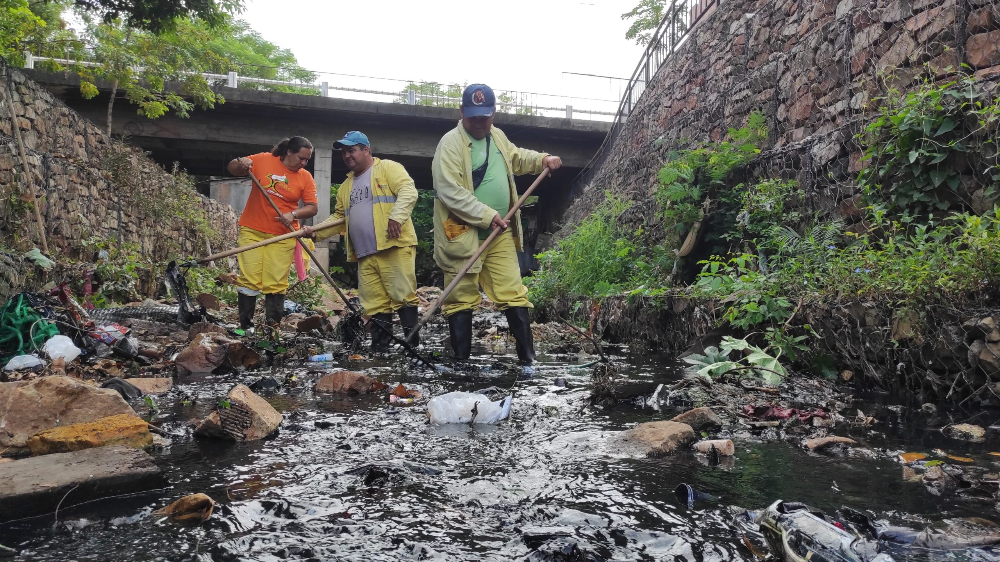
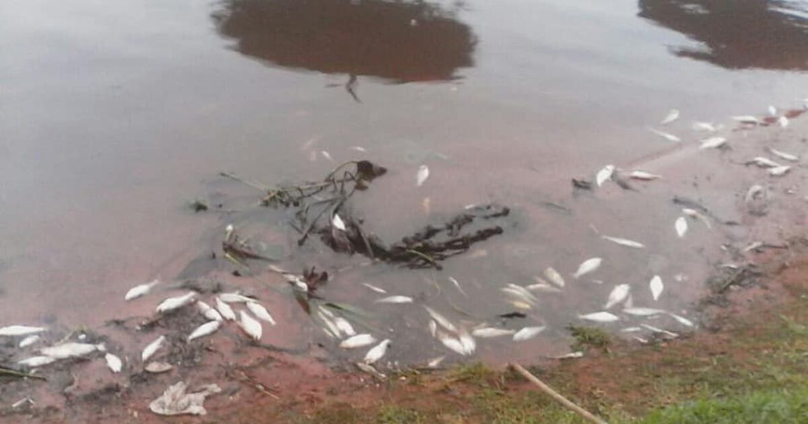

¿Qué es la contaminación ambiental?
La contaminación ambiental en Paraguay representa una de las mayores amenazas para el equilibrio ecológico y la salud de la población. Se origina cuando sustancias o residuos dañinos alteran el aire, el agua o el suelo. En ciudades como Asunción, Luque y Encarnación, el aumento del tráfico vehicular, las industrias sin control y el mal manejo de los desechos generan niveles preocupantes de contaminación.
Paraguay posee una gran riqueza natural, pero la deforestación, la quema de basura, el uso intensivo de agroquímicos y la falta de educación ambiental están deteriorando gravemente su entorno. Este problema no solo afecta a la fauna y flora, sino también al bienestar de las personas y al desarrollo económico del país.
Causas de la contaminación ambiental
Las causas de la contaminación ambiental en Paraguay son diversas y muchas están relacionadas con las actividades humanas. Algunas de las más destacadas incluyen:
- Deforestación: La tala indiscriminada en el Chaco y la Región Oriental reduce la capacidad natural del suelo para absorber contaminantes y agrava el cambio climático.
- Basura mal gestionada: Miles de toneladas de residuos se acumulan sin control, generando focos de infección y contaminación del aire y del agua.
- Quema de residuos: La quema de basura, común en zonas urbanas y rurales, libera gases tóxicos perjudiciales para la salud.
- Contaminación de ríos: El vertido de aguas servidas e industriales sin tratamiento afecta los ríos Paraguay, Pilcomayo y Paraná.
- Uso excesivo de agroquímicos: En la agricultura moderna se utilizan pesticidas que contaminan los suelos y las aguas subterráneas.
Consecuencias de la contaminación en Paraguay
La contaminación ambiental tiene efectos negativos en el ambiente, la economía y la salud pública. En Paraguay, las consecuencias más visibles incluyen:
- Incremento de enfermedades respiratorias y dérmicas en las zonas urbanas.
- Contaminación de los recursos hídricos, afectando la pesca y el consumo de agua potable.
- Pérdida de biodiversidad por la destrucción de hábitats naturales.
- Disminución de la fertilidad de los suelos agrícolas.
- Mayor vulnerabilidad ante inundaciones y sequías debido a la deforestación.
Estos impactos no solo comprometen el bienestar de las generaciones actuales, sino también el futuro del país, afectando su desarrollo sostenible y su capacidad de recuperación ambiental.
Soluciones para combatir la contaminación
Existen múltiples estrategias que pueden aplicarse para reducir los niveles de contaminación ambiental en Paraguay. Algunas soluciones prácticas son:
- Promover la educación ambiental desde las escuelas.
- Aplicar leyes estrictas sobre el manejo de residuos y sancionar a quienes contaminan.
- Fomentar el reciclaje y la reutilización de materiales en los hogares.
- Impulsar programas de reforestación y conservación de bosques nativos.
- Incentivar el uso de transporte público y bicicletas para reducir el uso de automóviles.
Con la participación activa de la ciudadanía, las instituciones y las empresas, es posible construir un país más limpio, sano y sostenible.
.png)
Proyectos ambientales en Paraguay
En los últimos años, se han implementado varios proyectos e iniciativas para combatir la contaminación y promover la sostenibilidad:
- Proyecto Paraguay Recicla: Campaña nacional que promueve la separación y el reciclaje de residuos en escuelas y comunidades.
- Reforestemos el Chaco: Iniciativa voluntaria de plantación masiva de árboles en zonas degradadas.
- Cuidemos el Río Paraguay: Movimiento ciudadano que busca limpiar las costas y sensibilizar sobre el uso del agua.
- Semana del Medio Ambiente: Actividades educativas organizadas por instituciones para generar conciencia ambiental.